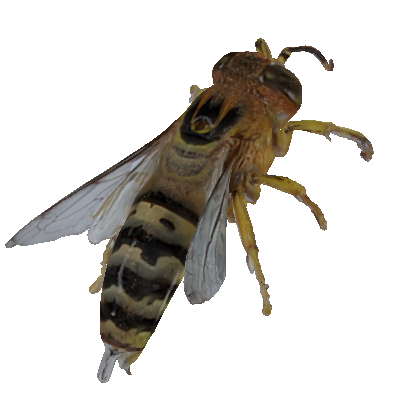
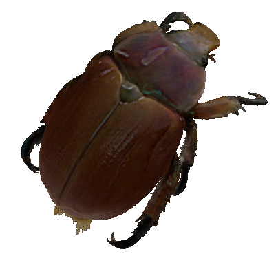
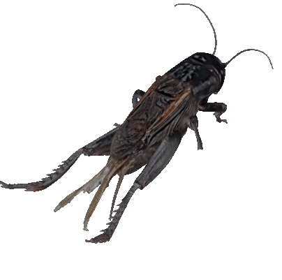
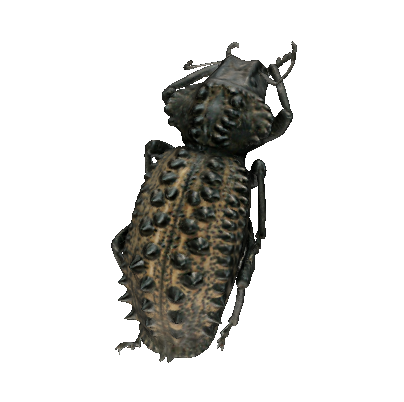
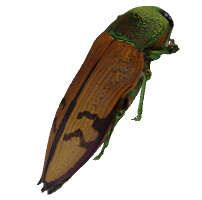
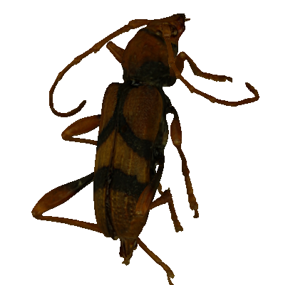
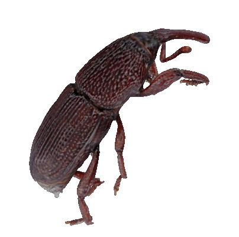
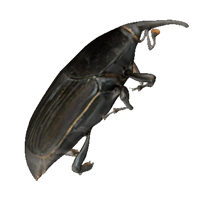

3D models provided by Chuong Nguyen of CSIRO Computational Informatics. The specimens were mostly from Australian National Insect Collection.
This data set is provided to accompany the following paper:
Chuong Nguyen, David Lovell, Matt Adcock and John La Salle (2013) Capture natural-colour 3D models of insects for species discovery and diagnosis, under review
|  |  |  |  |
|  |  |  |  |
This YouTube video describes the 3D insect scanning systems that created these 3D models.
This work is supported by CSIRO Computational Informatics, CSIRO Ecosystem Sciences, Atlas of Living Australia and CSIRO Office of Chief Executive (OCE) Fellowship.
Licence: 3D models are released under Creative Commons Attribution Licence.
Rights statement: All Rights (including copyright) CSIRO Australia 2013.
Contact: Chuong Nguyen of CSIRO Computational Informatics.
Note: 3D models were tested with Firefox 25.0 and Chrome 31.0. Last update on 19 December 2013.